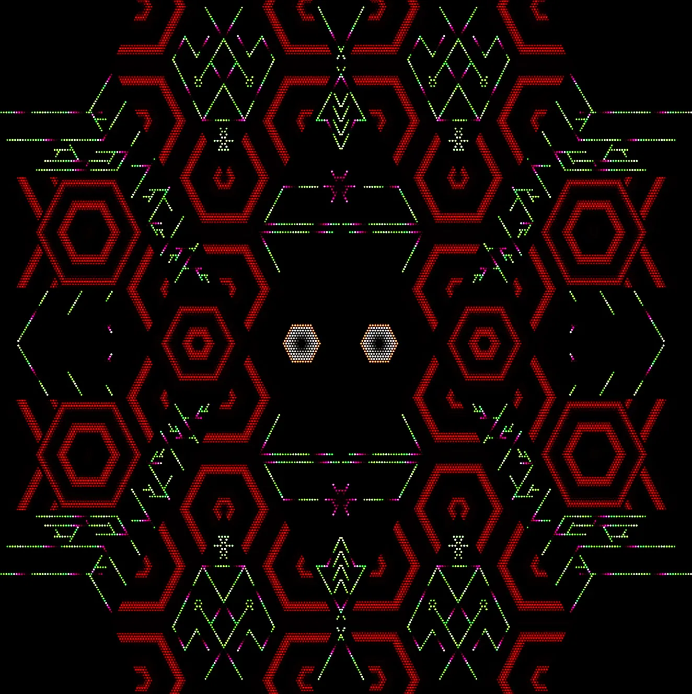

Concierto / Taller Fulldome
Experiencia audiovisual inmersiva que articula ritualidad, paisaje sonoro y cosmovisión indígena a través del formato fulldome.
Temazcalli Dome es una obra audiovisual inmersiva que conduce a la audiencia desde el interior de la práctica ritual del temazcal hacia la constelación de las Pléyades. La pieza construye una experiencia perceptiva basada en la relación entre proyección fulldome, instrumentación prehispánica y diseño sonoro espacial.
La obra propone una aproximación al domo como entorno para narrativas sensoriales, donde la imagen no se organiza únicamente desde una lógica representacional sino también desde una dimensión simbólica, corporal y cosmológica. En ese sentido, el proyecto articula referencias culturales y procedimientos contemporáneos de producción audiovisual.
Esta obra permite pensar el fulldome no solo como soporte técnico de visualización, sino como dispositivo para la construcción de experiencias inmersivas vinculadas a la percepción, la memoria cultural y la espacialidad sonora.
También resulta útil para trabajar cruces entre arte, cosmovisión, ritualidad y medios inmersivos, introduciendo perspectivas no occidentales en la narrativa audiovisual y ampliando el campo de análisis de las estéticas inmersivas.